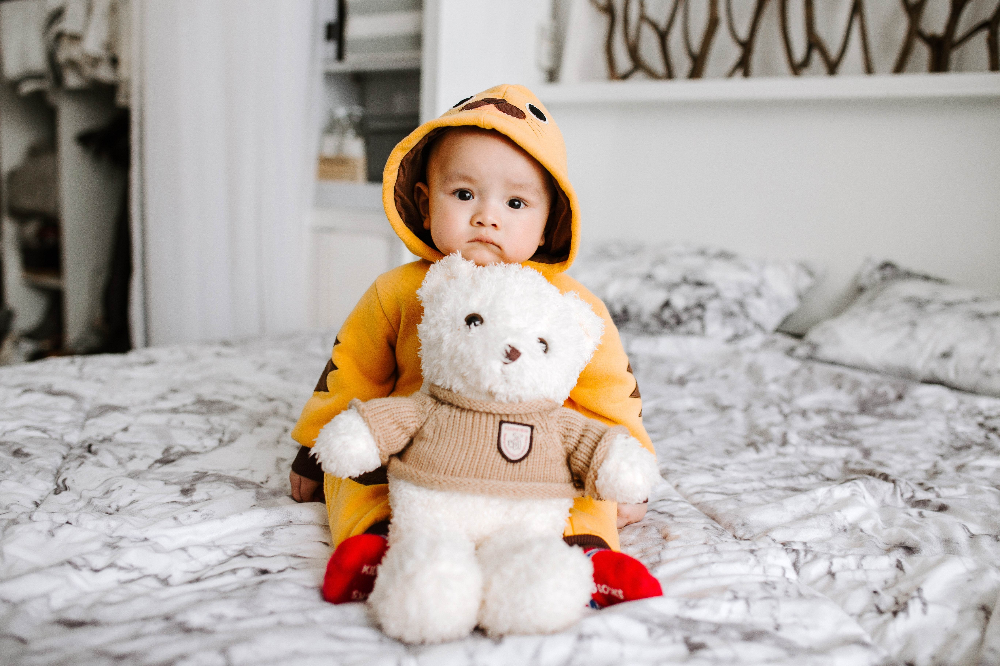

我们日常生活中常会说妈妈爱宝宝，同时宝宝也是爱妈妈的，有一次邻居家的孩子哭着说：“如果爸爸不喜欢自己那么自己也不喜欢爸爸了，如果是妈妈不喜欢自己，那么我也不喜欢自己了”，孩子会因为妈妈的否定，而去否定自己，却不会因为爸爸的不喜欢去改变自己。当家里的宝宝有以下的行为，说明宝宝爱你胜过你爱她.
一、喜欢缠着你
宝宝从出生的那一刻本能的会靠在妈妈的怀里，而慢慢长大后就开始缠着妈妈吃饭、睡觉；当宝宝学会走路就会开始每天跟跟在妈妈的后面，一不小心摔倒了也会寻求妈妈的安慰，喜欢和你做游戏，每天都粘着你，证明宝宝很喜欢和你在一起，和妈妈在一起很有安全感，就算是安静的躺在你的怀里，对宝宝来说都是快乐的。
二、喜欢和你说话
当宝宝学会说话了以后你就会发现宝宝每天就像一个百灵鸟一样，唧唧喳喳的叫个不停，妈妈可千万不要嫌弃宝宝烦人，因为厌烦把宝宝的爱说话的激情打发掉，只会让宝宝觉得你不爱他的这个习惯，从心底认为和别人分享开心的不开心的事情是不对的，从而产生消极的情绪。
三、喜欢分享
我带了些好吃的零食给了三岁的小侄女，而小侄女在每吃一样食物的时候都会先拿过去给嫂子吃，还有一次是宝宝在吃饭我给侄女夹了一个鸡腿，可侄女一直没吃，我问她为什么没吃啊？她告诉这是要留给妈妈吃的！
四、向你展示自己新学到的东西
平时宝宝只要学会了任何一样知识或者是技能，都会高兴的跑过来和妈妈展示，离得老远就开始说“妈妈，快看我”；比如会背了一首唐诗、一首儿歌或者是一项手工制作，尽管唐诗宋词背的不完整、儿歌唱的五音不全、手工制作的小东西连他自己都说不清楚是什么，请家长一定不要随便的敷衍孩子，请大方的夸奖孩子“真棒”而不是“哦”这样只会打击孩子的积极性。
宝宝是爱情的结晶生命的延续，当宝宝在生活中表现出这些生活细节的时候，也就是说宝宝更爱妈妈一些，虽然有些爱表达的方式并不是那么的让人容易接受，毕竟他们还小嘛